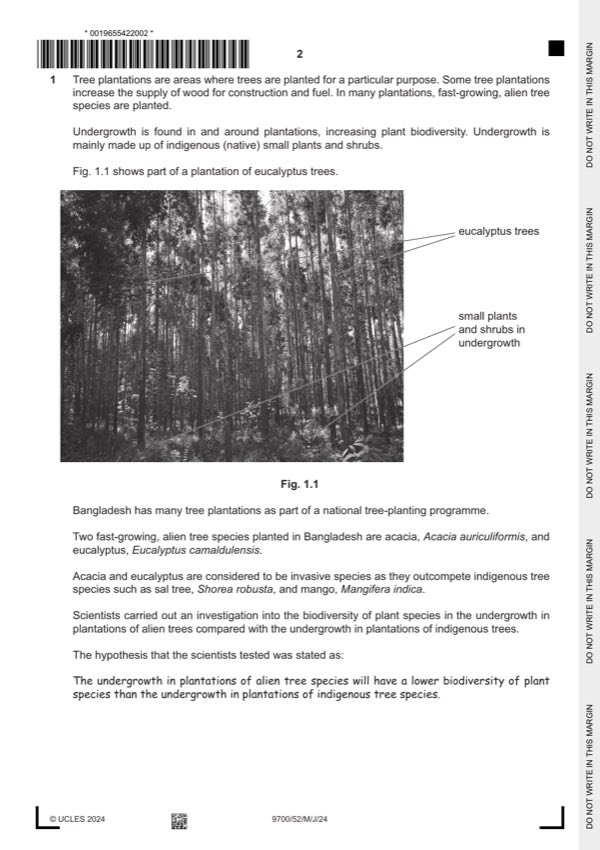

Question 1

Original paper page 2
Part 1(a)(i) — solution
species of tree 1
or
type of tree ;
Mark points
- Include the ideas shown in the solution above.
Part 1(a)(ii) — solution
any two from: 2
Mark points
- Include the ideas shown in the solution above.
Part 1 — solution
(same) number of / 3, plantations for each tree species ;
Mark points
- Include the ideas shown in the solution above.
Part 1(b) — solution
any five from: 5
using a belt transect:
Mark points
- Include the ideas shown in the solution above.
Part 1 — solution
use of tape / line / string, and quadrat (to create belt transect) ;
Mark points
- Include the ideas shown in the solution above.
Part 1(b) — solution
hazard risk precaution
plants / fungi falling trees / branches hard hat
thorns gloves / goggles / mask / long trousers / PPE
irritant / allergy antihistamines / cover skin / first aid equipment
infection (spores)
(named) bites / infection / attack antivenom / antihistamine / trained, professionals /
animal(s) / stings / allergy medics, available / insect
parasite repellent / gloves / goggles / mask
/ PPE / cover skin
plantation trip hazard correct footwear / watch where you are walking / use
terrain walking sticks
getting lost work in group / maps / use GPS / guide
poachers being attacked / shot trained, professionals/ medics, available
Mark points
- Include the ideas shown in the solution above.
Part 1(c) — solution
any one from: 1
(does not support)
1. acacia and mango have the same means
or
acacia and mango have similar, D values / index
or
mango and invasive species have overlapping, D values / index / means +/- SD ;
(does support / partially support)
2. sal tree has the highest, D value / index / mean
or
sal tree has greater, D values / Index / mean, than both alien species ;
University Press & Assessment 2024 Page 8 of 12
9700/52 Cambridge International AS & A Level – Mark Scheme May/June 2024
Mark points
- Include the ideas shown in the solution above.
Part 1(d)(i) — solution
Answer: 2
2
concentration volume of stock volume of (distilled)
/ mg cm-3 solution / cm3 water / cm3
7.5 37.5 12.5 ;
2.5 12.5 37.5 ;
Mark points
- Correct result: 2
Part 1(d)(ii) — solution
1 correct processes and correct figures ; 3
Mark points
- Include the ideas shown in the solution above.
Part 1(e) — solution
any three from: 3
improvement impact
Mark points
- Include the ideas shown in the solution above.
Part 1 — solution
More, intermediate / smaller values / intervals better idea of the, trend / pattern / effect ;
appropriate examples accepted
Mark points
- Include the ideas shown in the solution above.
Part 1(f) — solution
any two from: 2
Mark points
- Include the ideas shown in the solution above.
Part 1 — solution
idea that this technique can be used to distinguish between benign and malignant cells
or
the mean nuclear diameter of benign cells is smaller than in malignant cells / ora ;
explain
Mark points
- Include the ideas shown in the solution above.